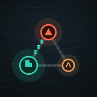

Estrategia en tiempo real · 1 jugador
TrasmundosCavaron demasiado hondo.
En el Rajo Norte cavaron más hondo de lo que decían los planos. Bajo el cobre había hifas, y estaban despiertas. Donde la veta tocó al hongo nació un tercer mundo. Ahora los tres pelean por el mismo mapa.
Descargar en App StoreGratis para iPhone y iPad. Android: muy pronto en Google Play.
- Tres mundos, quince especies. Cuenca minera, bosque micelar y la colonia sobre el filón.
- Partidas cortas. Toca tu aldea, toca el destino: quien llega con más fuerza se queda con ella.
- Sin conexión y en 13 idiomas. Sin cuentas, sin esperas y sin nada que comprar para avanzar.